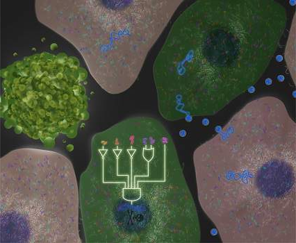
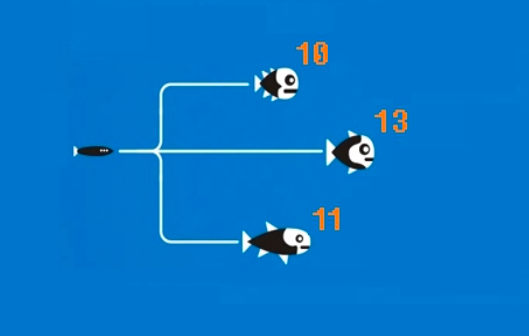

Biotecnología Dorada
¿Qué es eso?
Bioinformática
Biología Computacional
Biocomputación
Bioinformática
Desarrollo o aplicación de herramientas computacionales para el uso de datos biológicos (adquirir, almacenar, organizar, analizar o visualizar).

Biología Computacional
Desarrollo y aplicación de métodos teóricos y de análisis de datos, modelado matemático y técnicas de simulación computacional al estudio de sistemas biológicos, conductuales y sociales.
Biocomputación
Diseño de computadores con componentes biológicos o que funcionan como seres vivos
Perfil de bioinformático
Se trata de un Ingeniero Informático con conocimientos y ténicas de dicha ingeniería (inteligencia artificial, ciencias de la computación, machine learning...), utilizados junto con conocimientos de otras disciplinas (estadística, matemática aplicada, bioquímica...)
Principales proyectos
Alineamiento de secuencias y montaje de genoma
Predicción de genes y su expresión
Alineamiento estructural de proteínas
Predicción de estructuras de proteínas
Más proyectos (igual de importantes)
Modelado evolutivo
Secuenciación a gran escala
Estudio de la regulación genética mediante la interpretación de perfiles de expresión en MicroArrays
Hablemos de secuenciación
Mendel (1865): Detección y estudio de la herencia
Miescher (1868): Aislamiento del ADN
Griffith (1928): ADN = Responsable de la herencia
Alguien (1939): ¿ARN implicado en síntesis protéica?
Severo Ochoa (1959): NOBEL, descubre la transcripción ADN-ARN
Crick, Brenner & cols. (1961): 3 nucleótidos codifican un aminoácido
Hablemos de secuenciación
Watson y Crick (1950-1970):
1953: Postulan la estructura en doble hélice
1953: Crick enuncia el dogma central de la biología
1962: NOBEL, descubren la estructura en doble hélice
1966: Finalizan sus estudios dobre el cifrado del ADN
Hablemos de secuenciación
Walter Fiers (1972): Secuenciación del genoma del BacteriófagoMS2
Gilbert y Maxam (1973): Secuenciación de 24 pares de bases ('punto corrido')
Sanger (1975): Método de terminación de la cadena: Base del PGH
Mucha gente (1990-2003): Proyecto Genoma Humano
Ion Torrent Systems Inc. (2010): Método NextGenSeq Ion Torrent
Método de Sanger: Terminación de la cadena
Separación una cadena de ADN y adición cebador fluorescente y ADN polimerasa
Adición dNTP (desoxinucleótidos trifosfato)
Adición 1 ddNTP (didesoxinucleótidos trifosfato)
Extracción de las secuencias y electroforésis en gel
Repetición con otro ddNTP
Lectura 'a mano' de la fluorescencia
Next Generation Sequencing
Illumina Solexa
Basado en el método de Sanger, pero automatizado
Toma de imágenes por cada adición
Ion Torrent
Se van añadiendo tipos de nucleótidos diferentes cada vez
Sensibilidad a protones producidos en la polimerización
PGH ¿Y ahora qué?
Proyecto ENCODE
1000 Genomes Project
Roadmap Epigenomics Project
International Cancer Genome Commitee
¿Informática para Biología o Biología para Informática?
RNA, pero no ARN
Paradigma de aprendizaje y procesamiento automático inspirado en la forma en que funciona el sistema nervioso de los animales

Algoritmos Genéticos
Serie de pasos organizados que describe el proceso a seguir para solucionar un problema, pero inspirados en la evolución biológica y su base molecular y genética.
